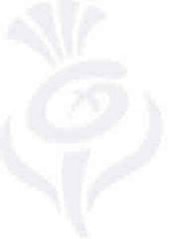

Trade Mark Journal No.2026/011 13 March 2026
UK00004314905 23 December 2025 (16,18,21,25,36,39)
Mark 1
Mark 2

Mark 3
Mark 4
- Class 16
- Paper; printed matter; printed publications; printed publications in the field of tourism; books; manuals; periodicals; magazines; newspapers; diaries; maps; charts; plans; calendars; posters; advertising and promotional literature and material; bookbinding material; photographs; stationery; educational supplies; cardboard; paper; stationery; adhesives for stationery or household purposes; drawing materials and materials for artists; paintbrushes; office requisites; instructional and teaching materials; stickers; labels; decalcomanias; iron-on transfers; writing materials; pens; pencils; pencil cases; crayons; erasers; memo boards; programmes; bookmarks; address books; albums; guest books; greeting cards; postcards; gift tags; printed gift vouchers; food wrappers; events programmes; printers’ type; printing blocks; money holders; works of art and figurines of paper and cardboard; architects’ models; arts, crafts and modelling equipment; bags and articles for packaging, wrapping and storage of paper, cardboard or plastics; disposable paper products, namely, napkins and tablecloths; parts and fittings for all of the aforementioned goods.
- Class 18
- Leather and imitations of leather; luggage and carrying bags; trunks and travelling bags; tote bags; backpacks; handbags; kitbags; wallets; purses; rucksacks; suitcases; umbrellas and parasols; walking sticks; whips, harness and saddlery; collars, leashes and clothing for animals; parts and fittings for all of the aforementioned goods.
- Class 21
- Household or kitchen utensils or containers; crockery; cups; mugs; plates; cookware; tableware; kitchenware; glassware; earthenware; porcelain; combs and sponges; brushes; articles for cleaning purposes; parts and fittings for all of the aforementioned goods.
- Class 25
- Clothing; footwear; headgear; belts.
- Class 36
- Financial and monetary services; insurance services; real estate services; financial sponsorship; financial sponsorship of business, entertainment, cultural and sporting events; information about financing and sponsorship; information, advisory and consultancy services in relation to all of the aforementioned services.
- Class 39
- Transport; packaging and storage of goods; travel arrangement; travel services; booking of transport and travel; tourism services; arranging travel to Scotland; providing information on travel to Scotland; arranging travel within Scotland; providing information about travelling within Scotland, arranging of tours; arranging of tours in Scotland; information about Scottish tourism travel (not downloadable) provided on-line from a computer database or from facilities provided on the Internet (including websites) or from any other communications networks; sightseeing, tour guide and excursion services; information, advisory and consultancy services in relation to all of the aforementioned services.
VisitScotland
Representative: Murgitroyd & Company